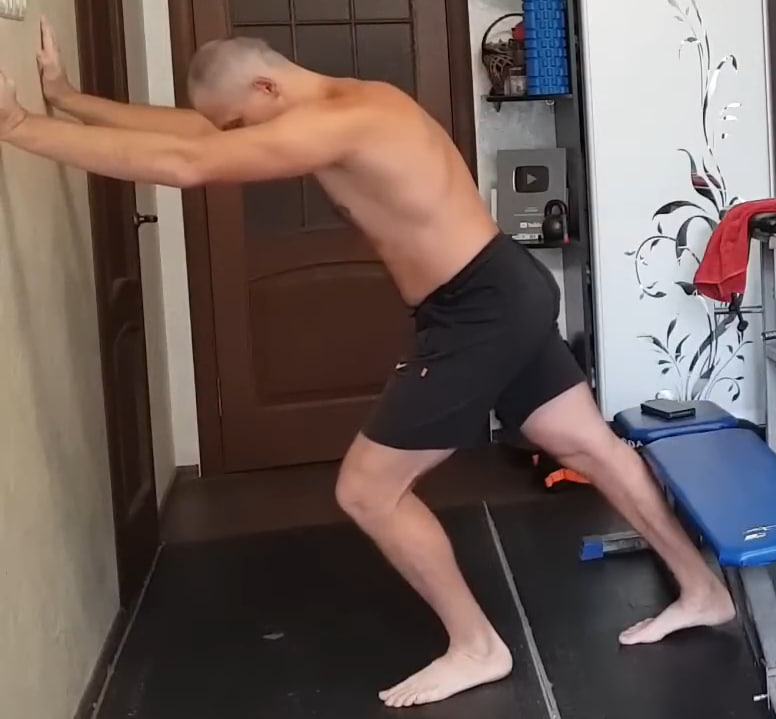
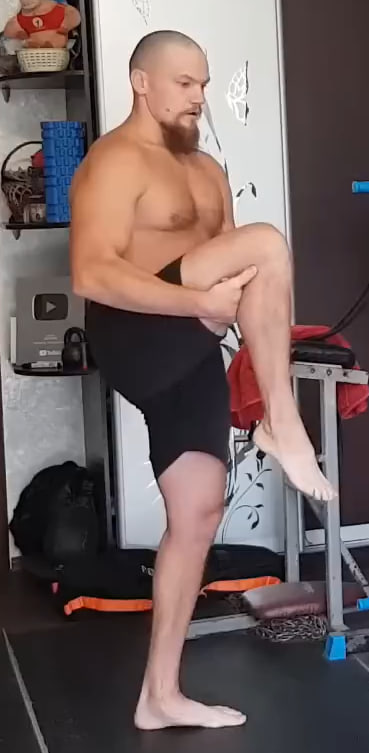

Día 7: piernas y glúteos + isometría y control (sin equipo)
Hoy trabajamos piernas y glúteos, isometría y control, core (abdomen y zona media) con ejercicios simples que caben en una habitación. El objetivo es construir fuerza útil, resistencia y control corporal con el mínimo de equipo.
Prioriza la técnica, respira con control y acumula consistencia: incluso una sesión corta suma cuando la repites día tras día.
0. Estiramiento rápido de pantorrilla en la pared
Antes de empezar: haz el calentamiento y repasa la respiración. (No lo saltes.)
Protocolo isométrico: tensión 10 s + descanso 5 s × 10 repeticiones (por lado, si aplica). Respira 3‑3‑3 durante la tensión (inhalar 3 s, retener 3 s, exhalar 3 s) y usa 3‑6‑3 entre series para recuperar. Más detalles: Respiración.

Antes de empezar la sesión apoya las manos en la pared a la altura del pecho. Una pierna queda delante con la rodilla ligeramente flexionada y la otra atrás completamente recta, con el talón bien apoyado en el suelo. Empuja la cadera hacia adelante hasta sentir un estiramiento profundo en la pantorrilla de la pierna trasera.
1. Subidas al banco estilo “pistola”

Colócate frente a un banco o plataforma estable. Apoya un pie en el banco y deja la otra pierna en el aire delante de ti, sin tocar el suelo. Desde ahí empuja con la pierna de apoyo y sube el cuerpo hasta extender casi por completo la rodilla. Baja de nuevo con control, manteniendo la pierna libre en el aire durante todo el movimiento. Realiza 10 repeticiones por cada pierna.
2. Elevación de rodilla al pecho de pie
Protocolo isométrico: tensión 10 s + descanso 5 s × 10 repeticiones (por lado, si aplica). Respira 3‑3‑3 durante la tensión (inhalar 3 s, retener 3 s, exhalar 3 s) y usa 3‑6‑3 entre series para recuperar. Más detalles: Respiración.

Ponte de pie con el torso recto. Eleva una rodilla hacia el pecho y abrázala con ambas manos, acercándola lo más posible al cuerpo. La espalda permanece larga, sin encorvarse. Haz 10 repeticiones por lado .
3. Saltos en posición de plancha


Comienza en posición de plancha con los brazos extendidos y el cuerpo en línea recta. Desde ahí salta llevando los pies hacia adelante, debajo del pecho, y vuelve atrás a la plancha con otro salto. Mantén el abdomen firme y evita que la cadera se hunda o suba demasiado. Realiza 10 saltos seguidos con ritmo elástico y controlado.
4. Zancadas con pausa isométrica
Protocolo isométrico: tensión 10 s + descanso 5 s × 10 repeticiones (por lado, si aplica). Respira 3‑3‑3 durante la tensión (inhalar 3 s, retener 3 s, exhalar 3 s) y usa 3‑6‑3 entre series para recuperar. Más detalles: Respiración.

Da un paso amplio hacia adelante y baja a una zancada, llevando la rodilla trasera casi hasta el suelo. El torso permanece vertical y la rodilla delantera mira estrictamente hacia adelante. Después sube con control y cambia de pierna. Completa 10 repeticiones por lado . Tras un par de minutos entenderás por qué Bronson pide tratar el entrenamiento de piernas con máximo respeto.
5. Saltos estrella desde sentadilla (2 series)
Seguridad en sentadillas: mantén los talones apoyados y el peso en el medio del pie. Las rodillas deben seguir la dirección de los dedos (sin colapsar hacia adentro). Si eres principiante o sientes molestias, evita que las rodillas se adelanten demasiado y piensa en “caderas atrás” para proteger la articulación.


Parte desde una sentadilla profunda con las manos cerca del suelo. Desde la parte baja realiza un salto explosivo hacia arriba abriendo brazos y piernas en forma de estrella. Aterriza suave, vuelve inmediatamente a la sentadilla profunda y repite. Haz 10 repeticiones, descansa unos segundos y realiza una segunda serie de 10 saltos con la misma técnica.
6. Sentadillas profundas con triple pausa
Seguridad en sentadillas: mantén los talones apoyados y el peso en el medio del pie. Las rodillas deben seguir la dirección de los dedos (sin colapsar hacia adentro). Si eres principiante o sientes molestias, evita que las rodillas se adelanten demasiado y piensa en “caderas atrás” para proteger la articulación.
Protocolo isométrico: tensión 10 s + descanso 5 s × 10 repeticiones (por lado, si aplica). Respira 3‑3‑3 durante la tensión (inhalar 3 s, retener 3 s, exhalar 3 s) y usa 3‑6‑3 entre series para recuperar. Más detalles: Respiración.


Coloca los pies un poco más anchos que los hombros, con las puntas ligeramente hacia afuera. Baja en sentadilla llevando la cadera hacia atrás y manteniendo el pecho abierto.
Versión básica (dos pausas). Luego sube hasta la mitad de la amplitud (punto medio entre abajo y arriba) y quédate ahí otros 10 segundos . Solo después termina de subir. Este ciclo cuenta como una repetición. Realiza 10 repeticiones .
Versión avanzada de Bronson (tres pausas). Desde la posición de pie baja primero hasta el nivel medio y congélate allí 5–10 segundos . A continuación vuelve a subir al nivel medio y quédate de nuevo 5–10 segundos . Solo entonces sube del todo, sin bloquear las rodillas por completo. Realiza 10 ciclos .
Errores habituales que debes evitar:
- levantar los talones del suelo;
- dejar que las rodillas se colapsen hacia dentro;
- empezar la subida sacando primero la cadera hacia atrás y arriba;
- redondear la espalda y “colgarse” en la zona lumbar;
- acelerar los cambios de nivel en lugar de bajar y subir lentamente;
- contener la respiración durante las pausas. La respiración debe ser tranquila y continua.
Este ejercicio es uno de los bloques más duros para piernas en todo el programa: las pausas en diferentes niveles obligan a trabajar a fondo a la musculatura del muslo, la cadera y el aparato ligamentoso de la rodilla.
7. Zancadas con pausa isométrica (segunda ronda)
Protocolo isométrico: tensión 10 s + descanso 5 s × 10 repeticiones (por lado, si aplica). Respira 3‑3‑3 durante la tensión (inhalar 3 s, retener 3 s, exhalar 3 s) y usa 3‑6‑3 entre series para recuperar. Más detalles: Respiración.

Repite el mismo ejercicio de zancadas del punto 4: paso amplio hacia adelante, descenso controlado y pausa de 10 segundos en la parte baja de la zancada. Cambia de pierna en cada repetición. Realiza de nuevo 10 repeticiones por lado , manteniendo el torso estable y la respiración bajo control.
Cierre
Experimenta: ajusta ángulos, rango y puntos de tensión hasta encontrar la versión que te sienta bien. Lo importante es que el entrenamiento sea sostenible y te dé ganas de volver. Crea condiciones para entrenar con regularidad, aunque sea poco: 10 minutos cuentan. Esta rutina está pensada para eso: que puedas cumplir incluso con poco espacio, poco tiempo y circunstancias difíciles.